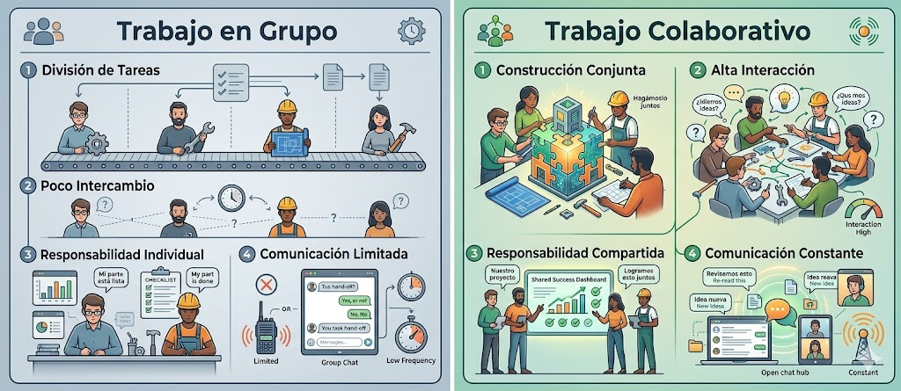
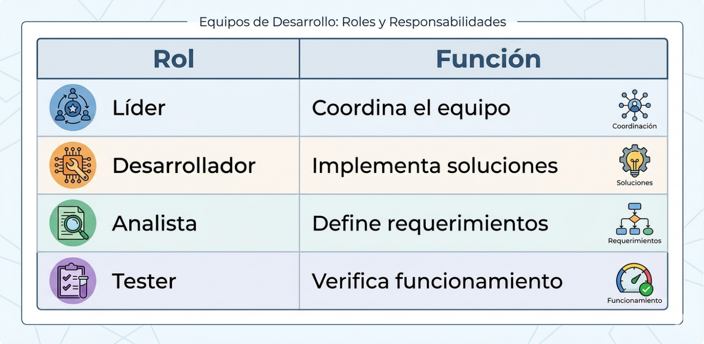
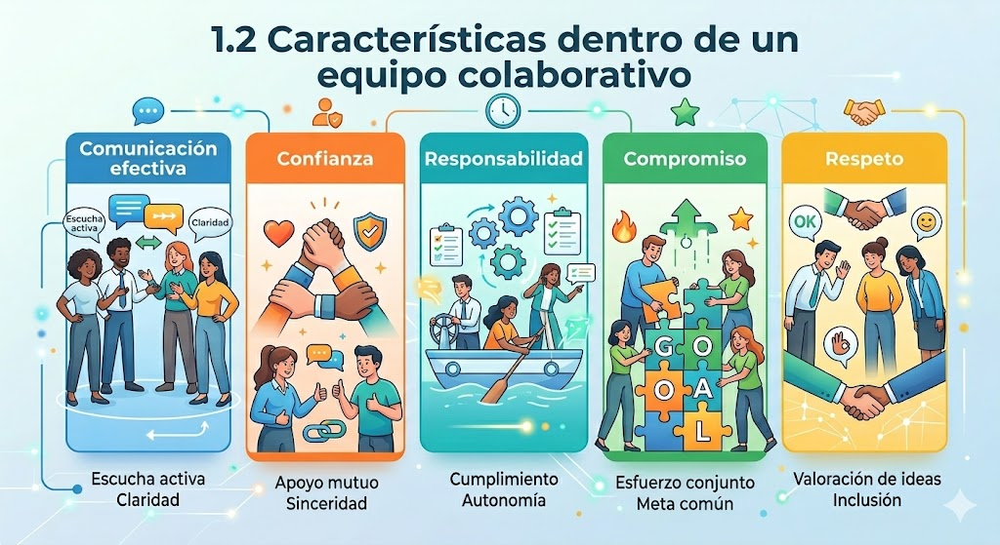
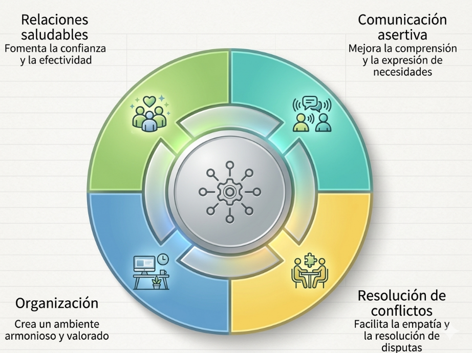
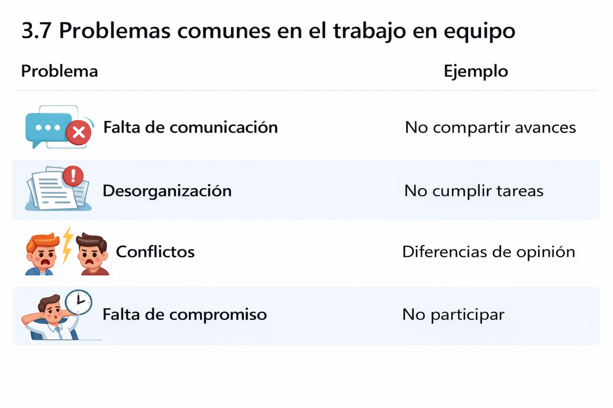

🎯
Objetivo común
El equipo avanza mejor cuando entiende qué problema resuelve y por qué importa.
En el desarrollo de software, el trabajo individual tiene límites claros. Los proyectos reales se construyen en equipos donde interactúan desarrolladores, diseñadores, analistas, testers y otras personas que necesitan coordinarse para alcanzar un objetivo común.
Colaborar no es solo dividir tareas: implica construir juntos, compartir responsabilidades, comunicarse con constancia y reconocer que el resultado final depende de la integración entre los aportes del equipo.
Metodologías como Scrum y otros enfoques colaborativos muestran que cuando el equipo se organiza bien, comunica avances y resuelve problemas de forma conjunta, mejora la calidad del producto y disminuyen los errores de integración.
🎯
El equipo avanza mejor cuando entiende qué problema resuelve y por qué importa.
🔗
Las partes técnicas y funcionales solo funcionan bien si se articulan entre sí.
🤝
El resultado no depende de una sola persona, sino de la coordinación del conjunto.
Recorre el tema mediante módulos visuales, comparaciones, infografías de la guía, ejemplos situados en desarrollo de software y apoyos prácticos para organizar mejor el trabajo colaborativo.

El trabajo colaborativo es la capacidad de un grupo para avanzar hacia un objetivo común, compartir responsabilidades, interactuar con respeto y construir soluciones de manera conjunta. No se limita a repartir tareas; implica conexión real entre los aportes.
Predomina la división de tareas con poco intercambio y seguimiento fragmentado.
Se conversa, se integra, se revisa y se ajusta en conjunto lo que cada quien produce.
Cada persona resuelve su parte sin considerar dependencias ni impacto en el resultado final.
Las decisiones se alinean con el objetivo común y se corrigen temprano los vacíos de integración.
En proyectos tecnológicos, el trabajo colaborativo permite integrar habilidades distintas, resolver problemas complejos, mejorar la calidad del software y aumentar la productividad. Un backend sólido no sirve si el frontend no lo entiende, y una buena base de datos falla si el flujo completo no se coordina.
Backend, frontend, analítica, pruebas y documentación se complementan entre sí.
Los problemas grandes se abordan mejor cuando el equipo cruza perspectivas técnicas y funcionales.
La revisión conjunta mejora consistencia, claridad y estabilidad del sistema final.
Una buena colaboración evita reprocesos, cuellos de botella y trabajo duplicado.
Define lógica y servicios para procesar datos y reglas del sistema.
Convierte la lógica en una experiencia clara y usable para quien interactúa.
Sostiene consistencia, recuperación y estructura de la información del negocio.
Si estas partes no colaboran, aparecen fallas de integración, retrabajo y productos que no responden bien al uso real.

Coordina al equipo, da seguimiento, ayuda a priorizar y sostiene el ritmo de trabajo.
Implementa soluciones, construye funcionalidades y colabora en la integración técnica.
Define requerimientos, traduce necesidades y ayuda a mantener foco en el problema real.
Verifica el funcionamiento, detecta fallos y aporta evidencia para mejorar calidad.


Haz clic para ver cómo se traduce cada habilidad en una práctica concreta de equipo.

El equipo descubre tarde que dos personas estaban resolviendo lo mismo o que una dependencia estaba bloqueada.
Se frena el sprint porque una entrega crítica no estuvo lista cuando el resto la necesitaba.
Una discusión técnica se estanca porque nadie escucha razones ni datos para comparar opciones.
Ideal para integrar múltiples competencias mediante una solución real o simulada.
Organiza roles, tareas y tiempos cuando el equipo necesita más claridad inicial.
Funciona con backlog, sprints, reuniones breves y entregas parciales.
Cada integrante estudia una parte y luego la enseña al resto del equipo.
Dos personas programan juntas alternando los roles de driver y navigator.
Genera ideas múltiples sin juzgarlas de inmediato para abrir posibilidades.
Revisión entre pares para mejorar calidad, pensamiento crítico y estándares profesionales antes de una entrega final.
Brainstorming para explorar ideas, luego trabajo estructurado para asignar responsabilidades.
Scrum adaptado al aula para sostener ciclos cortos y retroalimentación frecuente.
ABP o Jigsaw para desarrollar comprensión compartida y mayor participación activa.
Peer Review y Pair Programming para detectar errores y afinar criterios.
En equipo de 4 estudiantes, diseñen una solución para un “Sistema básico para gestionar pedidos en un negocio local (comida, tienda o servicio)”. Organicen el trabajo con principios de Scrum: roles, sprints y entregas parciales.
Coordina acuerdos, ayuda a priorizar y cuida el ritmo del equipo.
Propone la arquitectura o funcionalidad principal de la solución.
Define requerimientos, usuarios, alcance inicial y criterios del resultado esperado.
Valora si hubo coordinación, comunicación, reparto claro y seguimiento real.
Relaciona cada situación del equipo con el rol que debería liderarla mejor.
Selecciona la estrategia colaborativa más útil para cada situación.
El curso inicia un proyecto amplio que debe integrar análisis, diseño, programación y presentación final.
El grupo apenas empieza a trabajar junto y necesita claridad de roles, tiempos y entregables.
Se quiere simular un entorno laboral con backlog, sprints, reuniones breves y entregas incrementales.
Dos estudiantes necesitan trabajar juntos sobre una tarea de programación compleja y aprender mientras corrigen errores.
Antes de la entrega final, el equipo quiere mejorar calidad revisando código e informe entre compañeros.
Selecciona el proyecto, el foco de colaboración y la dinámica de trabajo. El sistema generará un acuerdo inicial de equipo.
Responde las preguntas de la guía para comprobar tu comprensión sobre trabajo colaborativo, problemas frecuentes y metodologías de apoyo.
Explora estos materiales para ampliar tu comprensión sobre equipos ágiles, roles y lenguaje compartido en trabajo colaborativo.
Guía para entender cómo colaboran equipos con perfiles distintos dentro de proyectos ágiles.
Ir al recursoMaterial útil para revisar responsabilidades, interacción y coordinación dentro de Scrum.
Ir al recurso
Versión en español latinoamericano de la guía oficial de Scrum, útil para roles, eventos y artefactos.
Ir al recurso